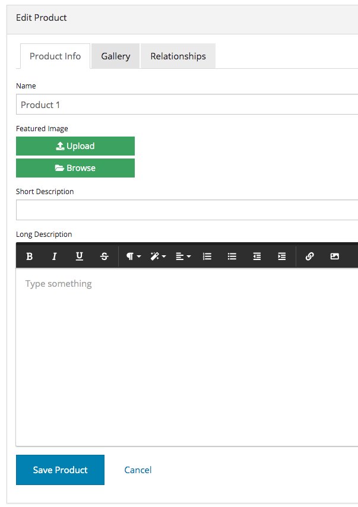
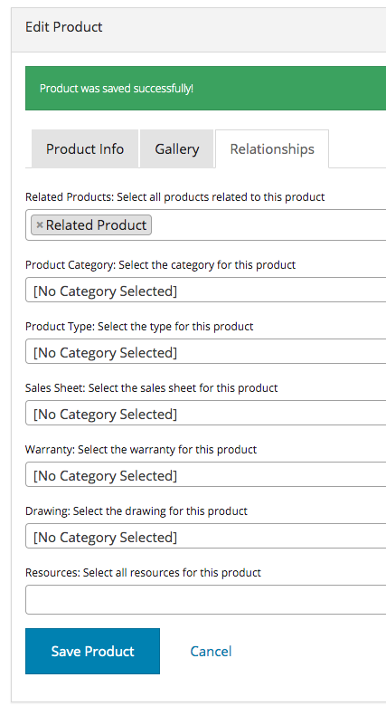
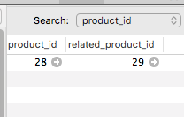
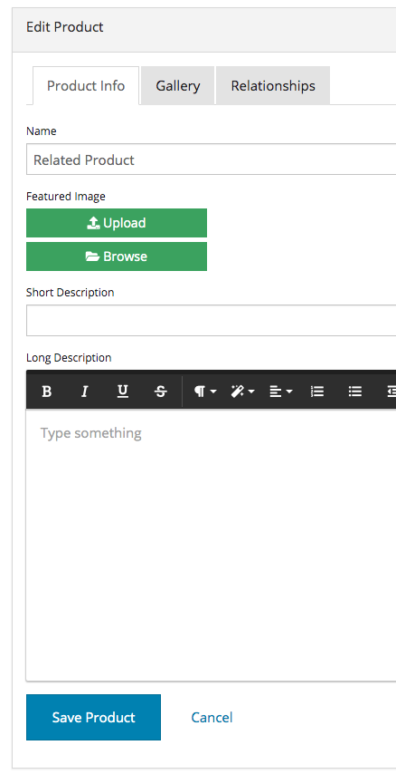
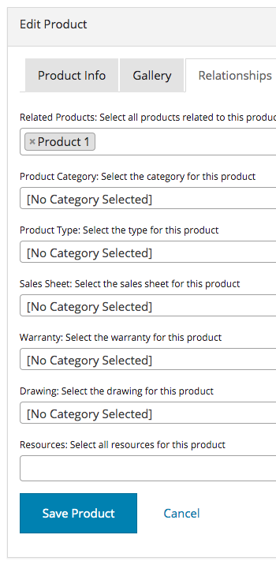
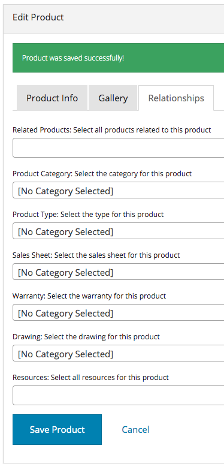
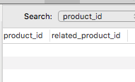

Relating Models To Themselves with Dynamo¶
Sometimes you will run into the case where you want to relate a model to itself. One of our clients wanted their web-app’s product detail page to list other products in a “related_products” relationship. Or maybe you’re building a social network and you want to relate Users to Users in a relationship called “friends”.
The issue that came about with Dynamo is that we used the ->hasManySimple(‘related_products’) method on the DynamoController. The pivot table called “product_product” had two columns “product_id” and “related_product_id”. When creating a product you could use the multiSelect box to select the related products, but if you saved and then went to that related product, it wouldn’t show the original product in the multiSelect box, and thus, the user might assume that no related products were attached, and attach some related products. If they attached the same product again you would end up with entries in the pivot table like (1,2) and (2,1). We wanted there to only be one entry (1,2) and the application understand on each of those product details pages, to list each other as related. Below is how we implemented this:
First we created the following relationships:
public function getAllRelatedProductsAttribute($value)
{
return $this->allRelatedProducts();
}
public function allRelatedProducts()
{
return $this->relatedProducts->merge($this->relatedTo);
}
public function relatedProducts()
{
return $this->belongsToMany('App\Product', 'product_product', 'product_id', 'related_product_id');
}
public function relatedTo()
{
return $this->belongsToMany('App\Product', 'product_product', 'related_product_id', 'product_id');
}
Let’s start from the bottom up. All of these relationships were defined on the Product.php model in the root of the app directory in the Laravel framework. relatedTo() says that “this” Product model is relatedTo itself (AppProduct), the pivot table’s name is “product_product”, and we set the “this” Product to the related_product_id column and set the product that we are relating it to to the product_id column. If this sounds a bit confusing please refer here in the Laravel documentation to how these parameters work. Next we need a relationship function that returns all the products that are related to “this” Product; so we reverse the third and fourth parameter. Next, we make a relationship function called allRelatedProducts which merges the relatedTo() and relatedProduts() function so the collection will contain both of their collections in one. Then we make a getter function that returns the allRelatedProducts() relationship function.
->formTab(FormTab::make('Relationships')
->select('allRelatedProducts', [
'label' => 'Related Products: Select all products related to this product',
'options' => Product::orderBy('name')->get()->pluck('name', 'id'),
'class' => 'chosen-select',
'multiple' => true,
])
->select('product_category_id', [
'label' => 'Product Category: Select the category for this product',
'options' => ProductCategory::getSelectList(),
'class' => 'chosen-select',
])
->select('product_type_id', [
'label' => 'Product Type: Select the type for this product',
'options' => ProductType::getSelectList(),
'class' => 'chosen-select',
])
->select('sales_sheet_id', [
'label' => 'Sales Sheet: Select the sales sheet for this product',
'options' => ResourceCategory::getSalesSheetSelectList(),
'class' => 'chosen-select',
])
->select('warranty_id', [
'label' => 'Warranty: Select the warranty for this product',
'options' => ResourceCategory::getWarrantySelectList(),
'class' => 'chosen-select',
])
->select('drawing_id', [
'label' => 'Drawing: Select the drawing for this product',
'options' => ResourceCategory::getDrawingSelectList(),
'class' => 'chosen-select',
])
->hasManySimple('resources', [
'label' => 'Resources: Select all resources for this product',
'options' => Resource::orderBy('title')->get()->pluck('title', 'id'),
'nameField' => 'title',
])
)
We create this FormTab called Relationships where the user may attach all the relationships this Product they are creating has. Look at the first select box. The first parameter is ‘allRelatedProducts’. This is needed so that if the user is Editing an already existing Product that already has related Products set, it will populate with those related Products. Another important thing is that it has ‘multiple’ => true,’ which tells dynamo to make it a multiSelect box on the form. Directly below this formTab we create a handler:
->addHandler('allRelatedProducts', function (&$product, &$data) {
if (isset($data['allRelatedProducts'])) {
$relatedIds = $product->allRelatedProducts->pluck('id');
$relatedIdsToRemove = array_diff($relatedIds->toArray(), $data['allRelatedProducts']);
$product->relatedTo()->detach($relatedIdsToRemove);
$product->relatedProducts()->sync($data['allRelatedProducts']);
unset($data['allRelatedProducts']);
} else {
// clear both relationships
$product->relatedProducts()->detach();
$product->relatedTo()->detach();
}
})
The first parameter is the relationship that we are handling. The second is a closure function that does the “handling”. It takes the item and its data that we are creating/editing as the closure arguments. It’s important that you at the ‘&’ to pass the arguments by reference because we need the data outside the scope of the function. Then we do an if statement that says, if the Product has allRelatedProducts data already set, then get the products relatedProduct ids, and find the difference in the ids that were submitted. Detach the leftover ids, because that means the user deselected Products that were once related but now they don’t want them related anymore. Then “sync” or update the relatedProducts() relationship. Look here for the sync method in the documentation. Then unset the part of the data.
else, if the allRelatedProducts select box is not set to anything (blank, user either cleared all related products or there wasn’t any to begin with) then detach all related products both ways.
All that’s pretty much it! it’s admittedly a bit confusing at first. But this algorithm is what needs to be done anytime you have a model that relates to itself. For example, in the case of creating a “friends” relationship between two User models, you would create relationships functions “friendsOf”, “friends”, “allFriends”, and the getter function. Then create the select box on the “allFriends” relationship. And the handler code is exactly the same, except you need to rename the variables and relationship function names appropriately and it will work.
Then in the form when creating a new User, the admin can select the friends of that User. If then, the admin saves, and takes a look at one of those friend models, the new User will populate in the select box automatically. If the relationship gets detached on either model, it will automatically be detached from the other model as well, since the pivot table is saving it in one row rather than like I explained at the beginning.
Below are some screenshots of the outcome (The captions under them help explain whats going on):
Here I create a new Product
I relate my new Product to another Product called Related Product.
Here we see the pivot table and 1 single row related these two products.
Next I navigate to and Edit the Related Product in the CMS.
And I automatically see the new Product I created attached to it. If we were using a ->hasManySimple() function on our DynamoController like we normally would to relate two SEPARATE models (not the same model), we would not see the newly created Product show up here automatically, and the user may try to select it again, creating a duplicate in the database which is not good.
Still on the Related Product Edit page, I deselect the Product1 I created from the beginning and hit save. We expect that the row in the database is gone, and that if I go back to Product1 and edit it, that I won’t see Related Product attached to it.
As expected, the row is gone and the two Products are no longer related.